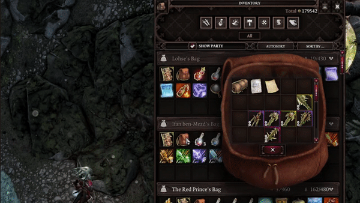

Epip Encounters¶
Epip Encounters is a UI and QoL mod targeting Epic Encounters 2, though it may also be used without it.
Download¶
Language warning
Only English is fully supported. Visit this sheet to contribute to translations.
Standalone usage warning
If you have the Improved Hotbar mod, you must disable it to use Epip. All of its functions are already in Epip (+ like 9 months worth of updates that the workshop mod never got). See the front page and the changelog if you're new to Epip.
Gameplay mod info
If you're using Derpy's EE2 Tweaks, you will likely want to grab the gameplay mod as well. Derpy's mod is intended to be used with it.
Requires Norbyte's Script Extender. Load after both EE Core and EE Origins, if you have them.
Latest stable version, v1065. (07/05/23)
See the patchnotes page for patchnotes.
Special thanks to:
- Ameranth for programming help as well as the amazing moddability of EE
- Derpy Moa for motivation and initial ideas
- Norbyte for the Script Extender and it's fantastic UI features
- Elric for his help with designing and drawing new UIs
- Cathe for contributing to the feature showcases on this website, and some code and proof-reading too
Translators:
- Cathe & JoienReid: Russian translation
- Ferocidade: Brazilian Portuguese translation
Features¶
Below is a non-exhaustive list of features; I suggested browsing the latest patchnotes to get up to speed with latest additions.
UI¶
Target Status Bar¶
Health bar shown at the top of the screen has been reworked to look better and include more information. More details here.

Player Portraits¶
Player portraits display has also received some love, most notably - the list of statuses will now wrap onto a second row to prevent it from obscuring most of your screen. More details here.

Epip makes dozens of other UI changes to improve your experience. You can read about the rest of them here.
Hotbar¶
Epip offers a heavily improved Hotbar UI, featuring multiple bars, custom "action" buttons in the bottom left, and numerous functions to make hotbar management easier.

To add/remove rows, click the small +/- icons to the right of the buttons area. You can cycle each row independently through all 5 rows of slots that the game allows. You can have up to 5 rows visible.
You can use the regular hotkeys (F/R by default) to cycle the bottom bar. Holding shift while using them will cycle the second row from the bottom instead. Holding Ctrl will cycle the 3rd row, while holding alt will cycle the 4th one.
The buttons next to the portrait are now customizable; when your hotbar is unlocked, you can drag and drop to rearrange them. Additionally, mods can add their own "actions" there, and there are a few new built-in ones. You can press the middle mouse button to unbind them.
Right click one of those buttons or click the ^ button to bring up a "drawer" with all the actions that you can drag and drop onto your actions bar. You can also click them to use them directly from there.

These buttons can be used with keyboard hotkeys; to do so, you must assign keys to them from Epip's input options menu. They are labelled "Hotbar Action #N" there.
By default, if you have 2+ rows of hotbar slots, you will also have a second row of these customizable buttons. You can disable this from the settings menu.
Epip Encounters implements multiple handy new actions, in addition to some vanilla functions:
- Source Infuse & Meditate
- Toggle Minimap
- Resting (using a bedroll from anywhere in your party inventory - no need to find one for everyone!)
- Toggle Party Link (instantaneous, no animation!)
- Respec (if Portable Respec Mirror mod is installed)
The purpose of the action bar is to provide a centralized place for modders to add shortcuts/hotkeys to their interfaces or features, eliminating the need for interactable books that clutter your inventory and freeing up space on the hotbar.
Right-click a row on the hotbar to bring up a context menu where you can "push" groups of slots around (great for inserting spells inbetween!), clear unmemorized spells, or save "loadouts" to restore your hotbars in later playthroughs.

Additionally, all "engine actions" (except for flee) are available from the vanilla actions drawer.
The hotbar improvements are also available as a standalone mod with no EE dependency.
Settings Menu¶
The settings menu has been expanded to allow mods to add their own settings. Epip includes its own tab full of options to customize its features.

The input menu has received similar treatment, with custom keybindings becoming possible. You must first click the "Controls" tab before you can access custom keybinds added by Epip.
Custom hotkeys include Meditate, Source Infuse, as well as binding the 12 "action buttons" from the Hotbar UI.

Additionally, the difficulty can now be changed to/from tactician freely at any time. The side effects of this have not been studied well, but everything appears to work fine with the exception of already-initialized enemies having missing HP and consumables(?).
Tooltip Adjustments¶
- "Stat Adjustments" in tooltips are now merged into one line.
- Added a label for items that have been Masterworked
- While infusing a spell or holding shift, skill tooltips now highlight Source Infusions you don't meet the requirements for. Holding shift also displays your relevant ability score in the tooltip.
- The simple small tooltips appear without a delay
- Skill tooltips now account for effects that increase or decrease AP costs
- Most statuses that deal damage now show the calculated damage, rather than showing "(before modifiers)"
- Status tooltips show who applied the status (if anyone)
- Tooltips for randomly generated items now show a "quality" label, which indicates how good the damage/armor rolls were for that item. A 100% quality indicates the best roll, possibly only on divine items.
- The word "Set:" has been removed from tooltips due to confusion and redundancy.
- Deltamods that previously did not show clearly in tooltips (+range, +elemental damage) now have blue labels in tooltips, like others.
- Holding shift will cause skill tooltips to display damage multipliers instead. Does not work for all skills.
- Removed the skull icon introduced by GB5 that appeared on negative status effects
- Added a keybind to scroll tooltips
- The damage tooltip in the character sheet has been made less confusing by removing the mention of damage from gear and dummied out LW values. Additionally, it now makes it clear that the weapon abilities grant multiplicative damage increases.
- Books that have been read and keys that have been used now have a green label in their tooltip.
- Artifacts display with a special rarity and item color, hand-picked by the EE devs. This change has been made available in the base EE mod as well. Additionally, artifact runes now show a "Cannot equip." warning for slots that they are incompatible with.
- Tooltips for damaging statuses now display the damage they will deal approximately, rather than showing the base damage before any modifiers.
- Long item tooltips will try to fit the screen better, eliminating the issue of being unable to compare items while wielding a heavily upgraded item.
- In developer mode, statuses and skills show their IDs in their tooltips.

Inventory¶
A setting has been added to enable infinite carry weight for all party members. You can also enable automatic identifying of items, optionally not requiring any Loremaster.
Consumable items, like mushrooms and food, no longer require you to use them once for them to show their effects in the tooltip.
Combat Log¶
You may now filter out individual types of messages in the combat log by right-clicking it. Certain messages have been reworded for clarity and can now "merge" if they happen in quick succession, improving readability. You can also clear the log from the context menu.

World Tooltips¶
A keybind has been added to make world item tooltips toggleable, so you don't need to hold alt all the time. Additionally, a setting exists to disable these tooltips for empty containers and bodies.
Rewards UI¶
An option has been added to allow viewing the character sheet while within the quest rewards screen, allowing you to compare rewards to your party's currently equipped items.
Overhead Text and Notifications¶
Settings have been added to shorten the duration of overhead text, and to change their size (as well as the size of damage numbers).
Notifications from characters casting skills in combat are repositioned to show above the hotbar, so as not to obscure the enemy health bars. They can also be disabled in the settings.
Additionally, you can change the duration of the area transition labels, or disable them entirely.
Skillbook¶
You can now unlearn skills by right-clicking them in the skillbook while out of combat. Innate skills cannot be unlearnt.
Crafting¶
The crafting UI now remembers your previous tab, instead of always defaulting to showing all items - this is helpful for using the Greatforge. Additionally, you can set the default tab of the UI in the settings menu.
Gift Bags and mod incompatibilities¶
Gift bag mods incompatible with EE are no longer selectable, to prevent regrets. Gift bags that work but for one reason or another are undesirable show a warning upon attempting to enable them.

Common mods incompatible with EE now show a warning when you load into the game with them enabled, once per playthrough.
Quick Examine¶
A "Quick Examine" panel can be opened with a custom hotkey (defaults to V). This panel is mainly used to show the effects enemies have from the "Epic Enemies" feature, but it also displays the character's artifacts, useful to check your ally's effects in multiplayer. More information will be added to this panel in the future.

Examine¶
The Examine UI now shows Critical Chance, and can be configured to open on the sides of the screen instead of the center.
Additionally, there is now a keybind to open the examine menu.
Ingame Patchnotes¶
A new journal UI can be accessed from the Hotbar actions, or after updating the mod. It lists the patchnotes of Epip, and other mods can add information/patchnotes there freely as well. Updating the mod will also show a prompt to open the UI.

Chat¶
Chat commands are added, beginning with a slash (/). The following commands exist:
/rp: shows a message over your current character's head. Great for role-playing./emote: plays an animation for your current character. Use/help emoteto see all emotes./help: shows all commands, or help for a particular command.
Save/Load UI¶
An alphabetical sorting option as well as a search bar can be enabled in the options for the save/load UI.

Ascension/Meditate¶
Ascension¶
You can now use the Esc key to go back to the previous page in the Ascension UI, or exit it if you're on the default page. An option exists to make this key always exit the UI.
An "Immersive Meditation" setting can be enabled to hide the minimap and hotbar while within the EE UIs.
Greatforge Context Menus¶
Item context menus now have options to quickly dismantle items, as well as to remove their runes. Doing so still costs the usual amount of gold/splinters respectively.
Containers with equipment in them get a "Mass Dismantle" option, letting you rapidly dismantle unwanted gear.

Greatforge¶
An option to add sockets to items ("Drill Sockets") has been added. This does not allow you to break the 2 socket limit for one-handed weaponry.
The Empower option now properly scales armor values, however this will only take effect after a save+reload.
Additionally, an option to rename items ("Engrave") has been added. This is purely cosmetic.
Epic Enemies¶
Epic Enemies is a randomizer feature enabled from the ingame settings menu. It bestows enemies with EE perks such as keyword activators/mutators, artifacts, and more. You can configure the relative chance of each effect being rolled on enemies.

These effects will be applied to enemies when they enter combat. You may use the "Quick Examine" feature to view the perks that each enemy rolled; see its respective section in this site for more info.
Vanity¶
Easy to use cosmetic customization system, including armor transmogrification, custom RGB dyes, quick outfit swapping and auras.
Wanna drip as hard as this? Learn more at the dedicated feature page.

Miscellaneous Bug Fixes and Adjustments¶
Certain vanilla issues have been fixed:
- Summons dying in combat (or being newly spawned) no longer causes your current character to be deselected
- You can now walk into corpses in combat without looting them; you can hold shift if you need to pillage them mid-fight, or disable this in the settings
For developers¶
Epip is built using numerous libraries, making client-side scripting and UI modding easier. This site's documentation of them is heavily WIP. Every UI touched by Epip has a lua table with wrapper APIs to manipulate it. Additionally, multiple utility libraries are available:
Client: contains queries relating to the client.Client.UI: holds all UI tables; too many to list individually, below are the most noteworthy ones.Client.UI.MessageBox: allows you to open your own message boxes, which may also prompt for user string input.Client.UI.ContextMenu: allows creating custom context menus, with numerous new types of elements and support for nested menus. Warning: it's a very old API and does not hold up to current standards. A rewrite is pending.
Client.Flash: contains utility methods for handling Flash elements from lua.Client/Server.lua: allows registering osiris symbol listeners from the client.Osiris: provides a cleaner way of working with Osiris symbols: allows passing of extender entity objects in place of GUIDs, returning from user queries, and unpacking DB query results.Character,Item: libraries with numerous utility functions for the related entity types.Text: utility methods for working with text, featuring a super-versatileFormatfunction for dealing with those pesky html font tags.Timer: self-explanatory. Also supports tick-based timers.Coroutine: improved coroutine table, with the ability to sleep coroutines, either for a certain amount of time or until a condition is met.Color,Vector: utilities for dealing with colors and vectors.Client.UI.Generic: allows for the creation of UIs using only lua. Work-in-progress (well, everything here is, in a way).Epip: main mod table, containing registered Features.
Developer Features¶
Debug Cheats¶
If the extender developer mode is available, a cheats context menu is added to characters, with numerous handy functions like:
- Copying GUID to clipboard
- Teleporting
- Kill/resurrect
- Next-gen godmode ("Pipmode"), with infinite AP and 0 skill cooldowns
- Adding Flexstats, ExtendedStats, attributes/abilities, skills, statuses and more
- Spawning all artifacts, or specific treasure tables or templates

Debug Display¶
In developer mode, a UI widget with FPS, TPS and mod version info can be enabled from the settings. This widget can be dragged around.

Debug Menu¶
In developer mode, a menu with debugging options for Features can be opened using a keybind (defaults to LCtrl + F). You can use it to change logging levels, disable features, and run tests. Your logging/debug settings are persistent.

AI Logging¶
An option exists to log AI scoring to the console.

Console Commands¶
A few miscellaneous console commands are added:
!bruteforceuitypes: client-side; attempts to find the TypeIDs of all UIs currently instanced, including custom ones!soundtest: client-side; plays all the sounds defined in the UI sounds lsx and shows their name. Useful for inspiration.!animtest: server-side; plays all human female animations on the currently controlled character. Cannot be interrupted once started!!worryaboutsuchsmallthings: tests the performance betweenEsvCharacter:HasTag()andOsi.IsTagged()!testactionhandles: tests string handles for "actions" from the Stats library.